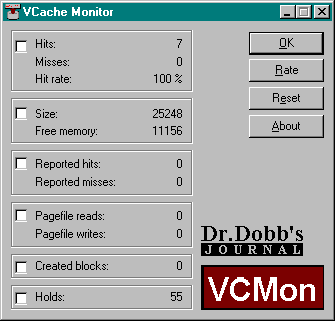

VCMon is a Windows 95 VxD/GUI combination that appeared in our May, 1996 Dr. Dobb's Journal article, "Examining VxD Service Hooking". While its primary goal is to serve as a demonstration of the interesting things that can be monitored easily with service hooking, disk cache monitoring can be useful and informative in its own right. In addition, the graphs that VCMon implements may be useful in your own programs.
Install VCMon by copying Vcmon.vxd and Vcmon.exe to the same directory on your hard drive, and start it by running Vcmon.exe from that directory. The GUI dynamically loads the virtual device driver (VxD), which starts watching disk cache activity. The checkboxes can be toggled to pop open graphs that represent recent activity.
The heart of VCMon is in the virtual device driver, Vcmon.vxd. It is dynamically loaded, and in its initialization it installs VxD hooks for disk cache, as well as page faulting services.
Periodically (at a rate that can be controlled through the dialog), the GUI asks the VxD to fill in a data structure with the current statistics, which are then used to update the dialog box and the graphs.
The following serve as additional sources of information on the Windows 95 VxD hooking: